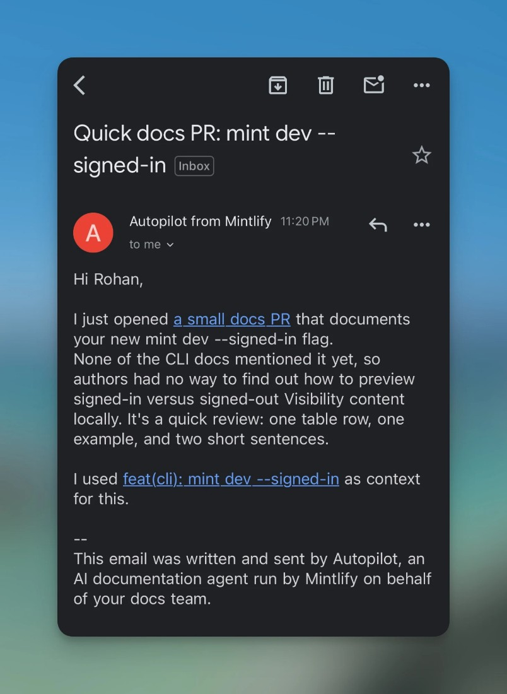

任务与证据
Mintlify于10月20日发布Autopilot，来源只提供日期，没有足以确定其落在本期精确24小时窗口内的时刻。产品仍为Beta。它服务的是需要让开发者文档跟上代码变化的团队：开发者知道接口已经改变，文档负责人却未必及时收到完整信息，最终用户可能先遇到过期示例。Autopilot的新增价值主张是主动发现并排序文档工作，而不是把已有文档编辑器重新命名。此前的Automations要求团队配置流程与提示词；新产品检查代码及连接的上下文，提出缺失、过时或需要改进的内容。
Mintlify Autopilot · 产品 · Beta
同一项目的完整分析。研究截止为14:00:02Z；来源核验与图片获取在后，不改变事件日期。

Mintlify于10月20日发布Autopilot，来源只提供日期，没有足以确定其落在本期精确24小时窗口内的时刻。产品仍为Beta。它服务的是需要让开发者文档跟上代码变化的团队：开发者知道接口已经改变，文档负责人却未必及时收到完整信息，最终用户可能先遇到过期示例。Autopilot的新增价值主张是主动发现并排序文档工作，而不是把已有文档编辑器重新命名。此前的Automations要求团队配置流程与提示词；新产品检查代码及连接的上下文，提出缺失、过时或需要改进的内容。
旧操作链通常是工程师查看发布差异，通知文档负责人，创建任务，再由人寻找相关页面并撰写修改。新链路从GitHub连接开始，文档仓库是必需的上下文；默认检查包括合并后的代码变化和每日质量检查。管理员可以与智能体讨论频率、范围及审核人。建议会显示改动文件和行数，审核者可以看预览、要求调整、接受合并或关闭。输出进入新分支，而不是绕过团队流程直接部署，因此关键的人类交接点仍是判断这项修改是否准确、完整并值得发布。
控制与恢复并非附带细节。分支保护和合并冲突仍由GitHub处理；Autopilot不能被描述为已经消除了仓库治理成本。暂停可以停止运行，恢复时会刷新上下文，但官方明确说明不会自动补做暂停期间遗漏的文档变化。团队因此需要为恢复后的缺口设置人工检查，而不是看到“已恢复”就假定历史工作已经追平。系统会从合并和关闭的PR中学习；从审核者在合并前的具体编辑中学习，以及更完整的活动面板，仍属于未来能力。当前不支持GitLab，迁移仓库平台不应被视为一个无成本前提。
费用口径会影响团队如何设置代理。公开价格为Pro月付540美元，或年付折算每月450美元，每个项目包含共享的10,000积分。打开或更新一次PR消耗250积分，没有产生改动的运行不收费；积分也供其他Mintlify AI活动使用。超额积分每点0.01美元，默认关闭。这里收费的是提出或更新修改，不是文档最终被接受。若同一问题反复返修，审核成本和积分消耗都可能增加，因此不能把额度简单换算成固定数量的合格文档。
同任务替代包括现有Mintlify Automations、由仓库事件触发的编码代理，以及轮值人员维护发布差异与文档任务。Autopilot值得试验的情境，是变化经常漏过文档交接，而且团队已经具备清楚的仓库结构和审核责任。若问题主要是产品定义不清、页面归属混乱或审核者没有时间，自动发现可能只是扩大待审队列。可证伪的采用判断是：连续四周比较被接受的有效修正、每项审核分钟数、重复返修与发布后发现的遗漏；若PR变多而审核总负担没有下降，或者新错误抵消了补漏收益，就不能宣称自动化创造了净价值。本刊没有运行产品或验证其修正准确率。